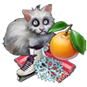
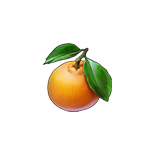
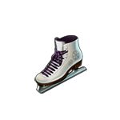
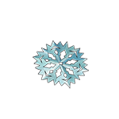
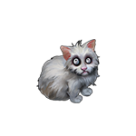

Получено: файл; исходный URL. Иллюстрация в отдельной статье ViveR_9 «Зимняя коллекция»; исходный файл без перекодирования. Авторство отдельно не установлено. Страница: источник.

Зимняя коллекция
ВКонтакте; дата источника не указана- Тип
- Коллекции
- Версия и дата
- ВКонтакте; дата источника не указана
Элементы коллекции












Данные по источнику · ВКонтакте · дата источника не указана
Предварительно: один источник; требует сверки. Требуется сверка.
- Награда
- Фольга и 250 опыта
- Где копать
- Снежная башня, снежная стена
- Состав (источник Zombie-island)
- Мандарин; Коньки; Шарф; Бумажная снежинка; Котёнок.
- Награда (источник Zombie-island)
- 1 Фольга; 250 Опыт.
- Где копать Зимнюю коллекцию в Зомби Ферме лопатами
- Школьный автобус; Ковёр-самолёт; Колизей; Карусель; Марафонец; Флаг Марафонца; Снежная башня; Светильник; Царь; Снежный куст; Кактус; Лавочка в снегу; Ограда; Зуб дракона 1; Зуб дракона 2; Зуб дракона 3; Ледяной слоник; Ледяной забор; Санта-сани; Дракон; Снежная свобода; Снежный паровоз; Лыжник; Терем на о. Гномов; Птаха.
- Зимняя попадается в ведрах Рыбаков, в Сундуках от Мандарина и мешках Звездочетов
- Рыбак; Рыбак с мозгами; Сундук Мандарина; Звездочет; Звездочет за зомбаксы.
- Зимнюю коллекцию можно найти в ценностях и сокровищах
- Сюрприз; Коллекционер 2; Носок зомби; Сундук Чудовища 3; Ледяной дворец; Новогодняя елка; Вишневый торт; Новогодняя елка за дубл; Новогодняя елка за зб; Ледяной дворец за ЗБ.
- Зимняя попадается при колдовании Палочками дома
- Палочка-выручалочка.
Данные по источнику · браузерная версия; платформа в ответе не уточнена · Дата на странице (формат не уточнён): 21/04/2015
Предварительно: Ответ справочного сайта; достоверность и независимость от других фанатских источников не установлены. Возможны различия редакций и версии.. Требуется сверка.
- Ответ источника
- Соберите все элементы Зимней коллекции в игре Зомби ферма, и она подарит вам 1 фольгу и 250 баллов опыта. Коллекционировать придется котят, шарфы, мандарины, коньки и бумажные снежинки. Берите лопаты и отправляйтесь на поиски материалов. Советуем копать под школьным автобусом, оградой, ледяным забором, лыжником, снежным паровозом, зубом дракона, лавочкой в снегу, царем, светильником, марафонцем, Колизеем, ковром-самолетом, снежной башней и так далее. Кроме этого, часть элементов из коллекции могут попадаться в мешках Звездочетов, ведрах Рыбаков и в секретных сундуках под мандариновыми деревьями. Иногда некоторые материалы выпадают в игрушках и сюрпризах.
Данные по источнику · браузерная версия; платформа не указана · дата редакции не установлена
Предварительно: Содержимое списка: изображения и колонки могут терять смысл при извлечении текста; отдельная страница и дата не проверены. Подписи alt иногда ошибочны.. Требуется сверка.
- Текст карточки из каталога
- 250 опыта и фольга Мандарин Коньки Шарф Бумажная снежинка Котёнок Где копать: Кактус, Снежный куст, Карусель, Ледяной забор, Зуб дракона, Снежный паравоз, Снежная Свобода, Ограды, Царь, Колизей, Ковёр-самолёт, Лыжник, Лувр, Флаг Марафонца, Марафонец, Санта-сани, Лавочка в снегу, Светильник, Ледяной слоник
Данные по источнику · браузерная версия; на сайте указана игра ВКонтакте · дата редакции не установлена
Предварительно: Исторический текст; сильно совпадает со справкой Zommbie.at.ua, независимость не доказана. Отрицания и доступность могут измениться с патчем.. Требуется сверка.
- Где искать по странице «Зомбастики»
- Ограда, снежная башня, снежный куст, кактус, карусель.
Данные по источнику · Историческая браузерная версия ВКонтакте; редакция неизвестна · дата публикации и последующей редакции не проверена
Предварительно: Фанатский справочник, возможна зависимость от других источников; вероятность находки не указана, актуальность не установлена.. Требуется сверка.
- Состав
- Мандарин, Коньки, Шарф, Бумажная снежинка, Котёнок.
- Обмен
- 250 опыта и 1 Фольга.
- Получение
- Рулетка Мандаринового автомата; среди ценностей названы Цитрусовое, Праздничная коробка, Сундук Чудовища и Новогодний подарок; также Рыбак, Рыбак с мозгами и варианты Звездочёта.
- Палочки
- Октавий, Дерево, Большая зимняя ёлка (три варианта), Пончик-перевёртыш, Снежная банка и подземный ресурс.
- Лопаты у друзей
- Среди объектов Школьный автобус, Ковёр-самолёт, Колизей, Шаттл, Флаг Марафонца, Гипножаба, Вишнёвый автобус, Терем, Лувр, Карусель и Изумрудный ковёр; также зимний декор.
- Применение
- Постройки Празничная и Санки Слона; в статье перечислены задания, в том числе «Метель» и «Помощь Сильвера». Количество не указано.
Данные по источнику · историческая браузерная версия, платформа не указана · 10.01.2014 — дата в каталоге; дата редакции материала неизвестна
Предварительно: Фанатский список без вероятностей и уточнения площадки; независимость от других источников не установлена.. Требуется сверка.
- Где искать по списку сайта
- Ограда, снежная башня, снежный куст, кактус, карусель
- Оговорка
- Список может относиться к разным условиям, инструментам и периодам игры; не доказывает гарантированное выпадение. Заявления «только» и «невозможно» относятся лишь к времени и версии источника.
Данные по источнику · историческая браузерная игра; площадка не уточнена · 08.10.2017 — дата каталога; редакция неизвестна
Предварительно: Проверен текст в каталоге сайта; вероятность выпадения не указана. Исторические версии и даты могут различаться; списки и награды требуют сверки, независимость сайта от других справочников не установлена.. Требуется сверка.
- Награда в источнике
- Фольга и 250 опыта
- Места в источнике
- Школьный автобус, ковёр-самолёт, колизей, карусель, марафонец, флаг марафонца, Санта-сани, лыжник, Птаха, горнолыжник, гипножаба, зелёный дракон, кролик, хитрая ворона, полярный мишка.
Связанные сущности
нет проверенных связей — требуется сверка.
Источники
- прочитано; проверка 2026-11-21
- прочитано: Zombie-island.moy.su; проверка 2026-11-21
- FatalGame: прочитан отдельный ответ; дата на странице 21/04/2015
- ZOMBIA: прочитана карточка в списке
- Ссылка на отдельную страницу; отдельно не проверена
- Зомбастики: прочитана соответствующая строка; возможная копия другого справочника
- ViveR_9: прочитанная статья коллекции
- zommbie.at.ua: где искать коллекции
- zombi-ferma.ucoz.net: каталог коллекций